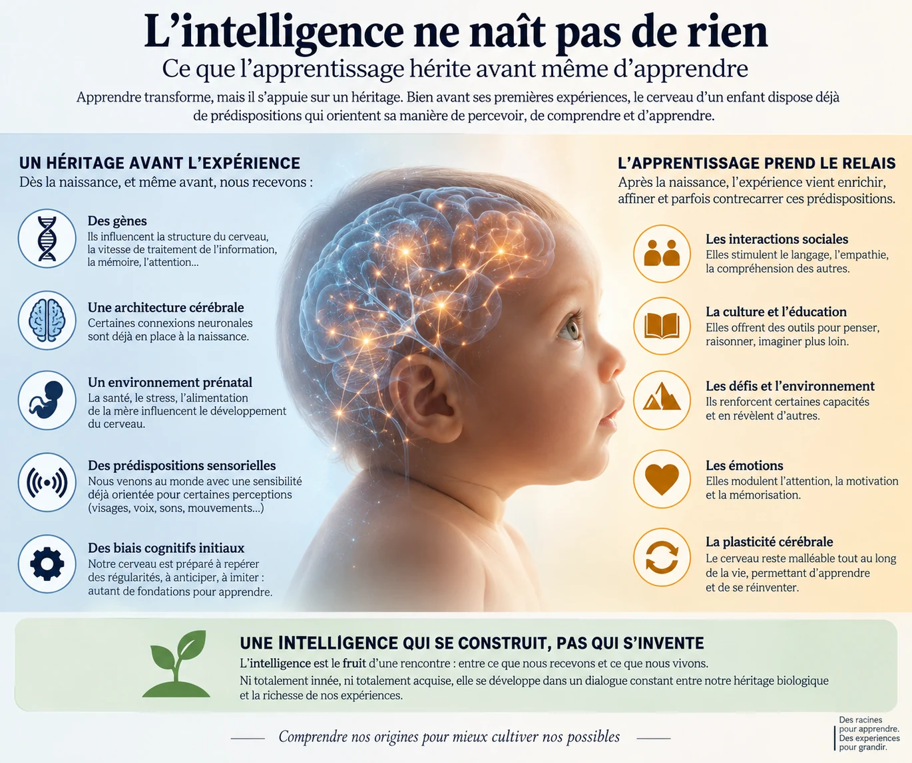

Ce texte a d’abord été publié sur LinkedIn le 20 septembre 2026. Il est désormais hébergé directement sur Les Esprits Pluriels afin de rester accessible sans compte externe.
Le comportement fascine parce qu’il oblige à préciser ce que signifie apprendre. Un coucou ne possède vraisemblablement aucune carte consciente du continent comparable à celle qu’un humain pourrait consulter. Le mot « savoir » devient trompeur s’il suppose une connaissance explicite. L’animal montre en revanche qu’une réponse complexe et adaptée peut apparaître sans formation préalable au comportement considéré. L’expérience individuelle la modifiera ensuite, parfois profondément, mais elle agit sur un organisme qui possède déjà des systèmes sensoriels, des circuits nerveux, des mécanismes de plasticité et une histoire développementale.
Cette distinction dépasse largement la migration. Dans la nature, certains animaux réagissent à des menaces qu’ils n’ont jamais rencontrées, orientent spontanément leur attention vers certains mouvements ou entreprennent seuls des déplacements qu’aucun congénère ne leur a enseignés. Ces capacités ne constituent pas une intelligence adulte prête à l’emploi. Elles montrent toutefois que l’apprentissage commence avec un organisme dont certaines propriétés sont déjà organisées.
Des comportements que personne n’a enseignés
En 2016, Marta Lomas Vega et ses collègues ont suivi par satellite cinq jeunes coucous partis de Finlande lors de leur première migration. Leur trajectoire initiale différait de celle des adultes, ce qui rendait peu plausible un accompagnement discret par des congénères expérimentés. Après un déplacement vers la Pologne, les jeunes ont poursuivi leur route vers le sud. Un émetteur a continué à transmettre jusqu’à l’arrivée de l’oiseau dans le nord-ouest de l’Angola, une région où hivernent normalement les coucous adultes du nord de l’Europe. Les auteurs de First-Time Migration in Juvenile Common Cuckoos Documented by Satellite Tracking concluent que ces jeunes peuvent rejoindre leurs quartiers d’hiver indépendamment, sans guidage par des congénères expérimentés.
Une expérience publiée en 2020 a soumis cette capacité à un test plus exigeant. Des coucous adultes et juvéniles ont été transportés artificiellement d’environ 1 800 kilomètres vers l’est, de la région baltique jusqu’à Kazan. Les jeunes effectuaient leur premier voyage. Après leur libération, leur trajectoire s’est déplacée vers l’ouest par rapport à celle des oiseaux témoins et certains individus ont compensé une partie importante du déplacement. La réponse restait variable et plusieurs oiseaux suivaient encore des routes peu compensées. Le suivi s’est toutefois interrompu dès septembre pour quatre des huit jeunes déplacés, ce qui peut expliquer une partie de cette compensation apparemment incomplète. Les auteurs observent d’ailleurs chez des adultes des trajectoires qui restent longtemps peu compensées après un déplacement comparable.
Ils considèrent leurs résultats comme un argument en faveur d’une « carte héritée » permettant aux premiers migrants de retrouver des quartiers d’hiver adaptés. Le mot « carte » demande ici une précision. Il ne désigne pas une représentation géographique mentale de l’Europe et de l’Afrique. Il renvoie plutôt à des mécanismes qui permettent à l’oiseau d’utiliser certaines informations de position pour modifier son orientation après un déplacement. Les auteurs évoquent notamment la possibilité de repères ou de règles de navigation qui deviennent pertinents dans certaines régions. L’expérience fournit ainsi un argument fort pour une composante héritée de la navigation, sans révéler exactement la nature de l’information disponible pour l’animal.
Les fauvettes à tête noire apportent une preuve d’une autre nature. Jusqu’au milieu du XXe siècle, les populations d’Europe centrale hivernaient principalement au sud-ouest. Une nouvelle route vers la Grande-Bretagne est ensuite apparue. Dans Rapid microevolution of migratory behaviour in a wild bird species, publié en 1992, Peter Berthold, Andreas Helbig et leurs collègues ont élevé en captivité les descendants d’oiseaux hivernant en Grande-Bretagne. Les jeunes migraient en automne vers l’ouest-nord-ouest, une direction génétiquement distincte de celle de la population britannique reproductrice et de la direction principalement sud-ouest des populations migratrices d’Europe occidentale et centrale.
L’intérêt de cette expérience tient à ce qu’elle dépasse l’idée générale selon laquelle les animaux posséderaient des instincts. Une caractéristique comportementale mesurable peut varier entre populations, se retrouver chez leurs descendants et orienter leur comportement avant qu’ils aient effectué le trajet concerné. Le génome n’a pas besoin de contenir une destination sous la forme d’une carte détaillée. Il peut participer à la construction de systèmes de perception, d’orientation et d’action qui rendent certaines trajectoires plus probables que d’autres.
Percevoir et réagir avant d’avoir été formé
Les poussins permettent d’observer le même principe à une échelle beaucoup plus immédiate. En 2005, Giorgio Vallortigara, Lucia Regolin et Fabio Marconato ont étudié des poussins nouvellement éclos, maintenus dans l’obscurité avant l’expérience. Lors de leur première exposition à des animations composées de quelques points lumineux, les animaux préféraient s’approcher des configurations reproduisant le mouvement biologique d’un vertébré. La préférence apparaissait avec une poule, mais aussi avec d’autres vertébrés, dont un chat. Les auteurs de Visually Inexperienced Chicks Exhibit Spontaneous Preference for Biological Motion Patterns proposent l’existence d’une prédisposition qui dirige précocement l’attention vers des objets animés et facilite ensuite l’apprentissage de leurs caractéristiques particulières.
Le poussin ne reconnaît pas pour autant les individus ni ne possède une représentation élaborée de ce qu’est un animal. Son système perceptif accorde davantage de poids à certaines structures de mouvement avant toute expérience visuelle correspondante. Une différence aussi élémentaire peut infléchir tout ce qui sera appris ensuite, puisque l’expérience dépend de ce que l’animal regarde, approche et explore. L’héritage intervient alors moins sous la forme d’une connaissance que comme une orientation de l’attention.
Les réactions défensives des souris montrent une préparation différente. En 2013, Melis Yilmaz et Markus Meister ont présenté à des souris un disque sombre qui s’agrandissait rapidement dans la partie supérieure de leur champ visuel, comme le ferait un objet aérien approchant. Les animaux déclenchaient soit une fuite rapide vers un abri, soit une immobilisation prolongée. L’article, Rapid innate defensive responses of mice to looming visual stimuli, décrit ces comportements comme des réponses visuelles défensives innées.
L’expérience future pourra modifier leur intensité ou les situations qui les déclenchent. La première réaction adaptée n’a pourtant pas besoin d’attendre plusieurs rencontres avec un prédateur. Pour un organisme soumis à un risque mortel, une telle préparation offre un avantage immédiat. Certains apprentissages peuvent ainsi partir d’une réponse déjà fonctionnelle plutôt que de devoir construire entièrement cette réponse par essais successifs.
Même avant que ces comportements soient observables, le système nerveux en développement possède une activité propre. Dans une revue publiée en 2010, Aaron Blankenship et Marla Feller décrivent des motifs spontanés d’activité dans plusieurs circuits en développement, notamment la rétine, la cochlée, la moelle épinière, l’hippocampe et le cervelet. Cette activité fournit des signaux impliqués dans le développement des neurones et de leurs connexions. Le système nerveux ne se contente pas d’attendre passivement les informations du monde extérieur pour commencer à s’organiser.
Chez l’humain, héritage et expérience s’entremêlent très tôt
L’être humain dépend énormément de l’apprentissage. La langue précise que nous parlerons, les techniques que nous utiliserons, les connaissances scientifiques, les règles sociales et l’immense majorité de nos compétences doivent être acquises. Cette dépendance laisse néanmoins subsister des différences biologiques entre les organismes sur lesquels l’expérience agit.
En 2018, Jeanne Savage et ses collègues ont publié dans Nature Genetics une méta-analyse d’association pangénomique portant sur 269 867 personnes. Les chercheurs ont identifié 205 loci associés aux différences mesurées d’intelligence ainsi que 1 016 gènes selon leurs méthodes de cartographie. L’étude renforce l’idée d’une architecture génétique très distribuée, où de nombreux variants possèdent chacun des effets faibles.
La portée de ces résultats doit rester proportionnée à ce qu’ils mesurent. Les variants identifiés expliquaient environ 5 % de la variance de l’intelligence mesurée dans les populations étudiées. Les résultats des GWAS dépendent également de la définition du trait, de la composition des échantillons, de la structure des populations et des relations complexes entre génétique et environnement. La génomique établit ainsi une contribution génétique distribuée aux différences cognitives observées. Elle ne fournit ni une mesure complète de l’intelligence individuelle ni une confirmation indépendante des mécanismes comportementaux observés chez les autres espèces.
La naissance elle-même sépare imparfaitement ce qui serait biologique de ce qui serait appris. En 2013, Eino Partanen et ses collègues ont exposé des fœtus humains à des variantes répétées d’un pseudo-mot pendant les dernières semaines de grossesse. Après la naissance, les enfants exposés présentaient une réponse cérébrale plus forte à certaines modifications de hauteur tonale que le groupe témoin. Dans le groupe exposé, l’amplitude de la réponse aux hausses de hauteur augmentait avec la quantité d’exposition prénatale, avec une corrélation de r = 0,61. Les chercheurs interprètent ces résultats comme la trace neurale d’un apprentissage auditif antérieur à la naissance.
Cette observation interdit d’assimiler automatiquement « présent à la naissance » et « génétiquement hérité ». Une sensibilité observée chez un nouveau-né peut déjà avoir été modifiée par l’expérience prénatale. Une disposition influencée par l’hérédité peut, à l’inverse, devenir visible beaucoup plus tard. Le développement combine continuellement gènes, maturation, activité du système nerveux et environnement.
Nous n’héritons vraisemblablement pas du français appris par nos parents, de leurs souvenirs ou d’un métier qu’ils maîtrisent. Nous héritons en revanche d’un organisme dont les propriétés perceptives, motrices et cognitives influencent la manière dont les expériences futures seront reçues et transformées en apprentissage.
Hériter d’une pente plutôt que de la leçon
L’évolution peut aussi agir sur la capacité même à apprendre. Lorsqu’un type de problème revient pendant de nombreuses générations, les individus qui le résolvent plus rapidement ou à moindre coût peuvent bénéficier d’un avantage reproductif. Des variantes héréditaires facilitant cette acquisition peuvent alors devenir plus fréquentes.
L’effet Baldwin décrit cette interaction entre plasticité, apprentissage et évolution. Il ne s’agit pas d’un mécanisme lamarckien où ce qu’un parent apprend serait ensuite inscrit dans les gènes de son enfant. La sélection agit plutôt sur des variations héréditaires déjà présentes ou nouvelles. Si certaines rendent un apprentissage avantageux plus facile ou plus rapide, les individus qui les portent peuvent laisser davantage de descendants et ces variantes deviennent progressivement plus fréquentes.
Le phénomène ne suit pas toujours la même direction. Dans un modèle publié en 2007 dans The American Naturalist, Ingo Paenke, Bernhard Sendhoff et Tadeusz Kawecki montrent que la plasticité peut accélérer ou ralentir la réponse génétique à une sélection directionnelle selon la relation entre génotype, phénotype et valeur adaptative. L’apprentissage peut renforcer la sélection de certaines variantes dans une configuration et réduire la pression sélective dans une autre.
L’expression « hériter d’une pente » rend assez bien cette idée. L’organisme ne reçoit pas nécessairement la réponse exacte au problème. Certaines voies deviennent simplement plus accessibles que d’autres. Une sensibilité perceptive, une coordination motrice, une motivation ou une facilité d’association peuvent réduire la quantité d’expérience nécessaire à l’acquisition d’un comportement efficace.
L’épigénétique ajoute une autre voie possible de transmission biologique entre générations, avec davantage d’incertitudes chez les mammifères. Dans Calling the question: what is mammalian transgenerational epigenetic inheritance?, publié en 2024 dans Epigenetics, Hasan Khatib et ses collègues ont examiné 80 études présentées comme soutenant une transmission épigénétique transgénérationnelle. Ils soulignent les difficultés à distinguer transmission intergénérationnelle, effets prénataux et véritable transmission par la lignée germinale, ainsi que l’obstacle constitué par les grandes phases de reprogrammation épigénétique.
Cette littérature n’offre aucune base solide à l’idée d’une bibliothèque biologique contenant les souvenirs ou les connaissances explicites des ancêtres. Elle n’est d’ailleurs pas nécessaire pour établir le point principal. La génétique classique, le développement et les comportements animaux précoces suffisent déjà à montrer qu’un apprentissage peut commencer sur un terrain fortement structuré.
Ce que l’apprentissage reçoit avant d’apprendre
Les coucous, les fauvettes, les poussins et les souris ne montrent pas tous le même phénomène. Chez les premiers, la migration révèle des mécanismes d’orientation disponibles avant la première expérience du trajet. Chez la fauvette, les expériences d’élevage relient une modification de la direction migratoire à une composante génétique. Chez le poussin, une prédisposition perceptive oriente immédiatement l’attention. Chez la souris, une configuration visuelle particulière déclenche une réponse défensive sans entraînement préalable.
Ces résultats ne démontrent pas l’existence d’une intelligence complète avant l’apprentissage. Ils établissent un point plus précis : l’expérience individuelle n’est pas la seule source d’organisation du comportement. Les organismes arrivent dans le monde avec des propriétés qui influencent déjà ce qu’ils perçoivent, ce qu’ils évitent, ce qu’ils recherchent et la manière dont ils pourront apprendre.
L’expérience reste déterminante. Elle perfectionne les migrations, transforme les réactions au danger, construit des représentations nouvelles et permet de répondre à des situations que l’évolution ne pouvait spécifier dans leur détail. Sa puissance dépend en partie de la plasticité du système sur lequel elle agit.
Chez l’être humain, cette ouverture atteint une ampleur exceptionnelle. Nous devons acquérir la langue, les savoirs, les techniques et les règles de nos sociétés. Les contenus culturels ne sont pas transmis sous forme de connaissances génétiques. La capacité à les apprendre dépend pourtant d’un cerveau, d’un corps et de mécanismes de développement qui possèdent déjà leur propre histoire.
La distinction permet de sortir d’une opposition trop simple entre ce qui serait entièrement inscrit à l’avance et ce qui serait entièrement construit par l’expérience. Nous pouvons hériter de conditions qui rendent certaines perceptions, certains comportements ou certains apprentissages plus accessibles sans hériter du contenu final de ce qui sera appris.
L’intelligence se construit au cours de cette interaction. Elle se nourrit de l’expérience, mais cette expérience rencontre toujours un organisme déjà façonné par son développement et par une histoire évolutive plus ancienne que lui.